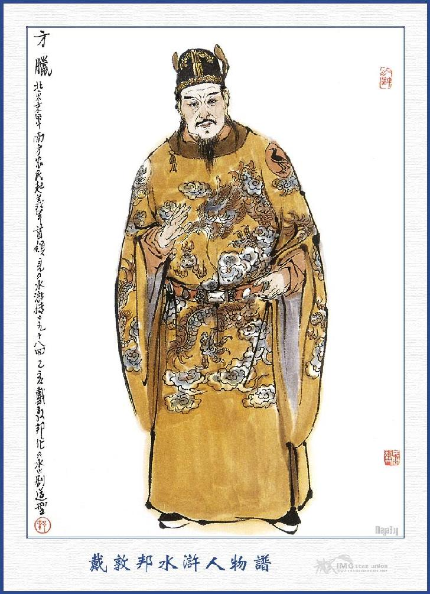
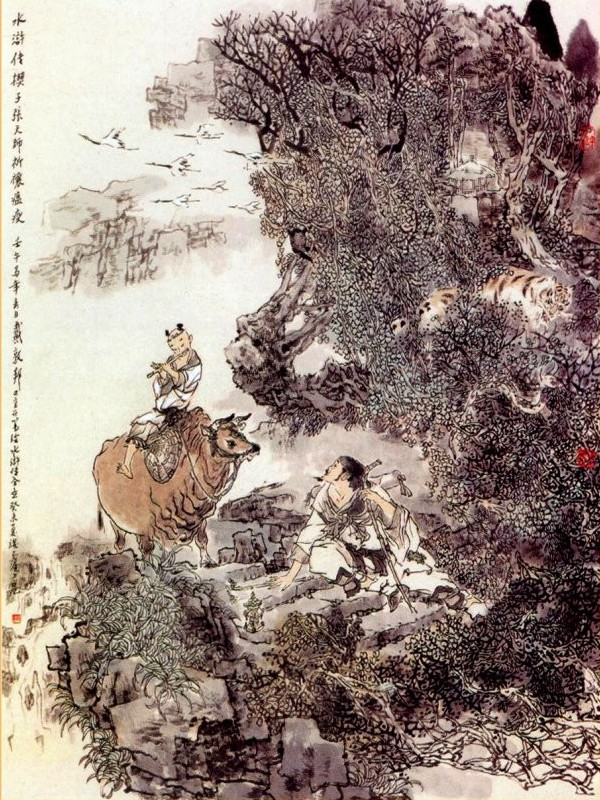
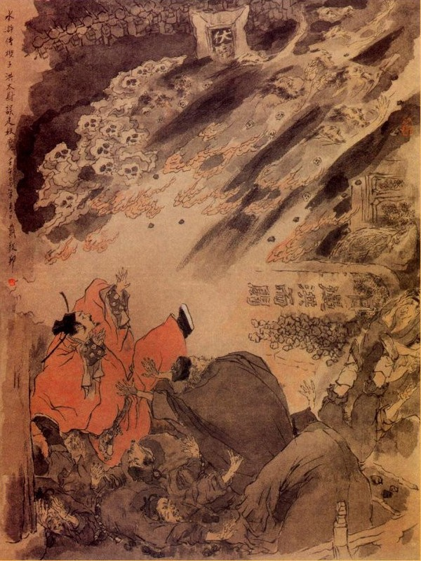

Đáng thương thay, cuốn sách này viết xong mà đặt tên là Thủy Hử? Vậy thì 108 người ấy là có người thực chăng? Hay là không có người thực chăng? Nếu quả là có thực người ấy thì lại lòng nào mà ra ở tận nơi thủy bạc thế kia? Mà nếu quả không có người thực thì trong bụng tác giả cuốn sách này, ta không hiểu có cái oán khổ đến chừng nào mà phải đặt ra 108 người mà phải đẩy cho ra ở tận nơi bến nước xa xăm!
Ta nghe: "Khắp trong mặt đất, đâu không phải là tôi của nhà vua? Khắp dưới gầm trời đâu không phải đất của nhà vua?” Vậy trong 108 người mà không có thì đành thôi không nói. Nhưng nếu 108 người mà quả có thực thì có lẽ rằng họ muốn cho những nơi thành Uyển Tử, bến Liên Nhi là một chỗ không phải thuộc vào phạm vi triều đình nhà Tống hay sao?
Ta đọc sách Mạnh Tử đến chỗ: "Bá Di lánh Trụ ra ngoài bến Bắc Hải, Thái Công lánh Trụ ra ngoài bến Đông Hải". Ta chưa từng than rằng:
"Trụ tuy không ra gì, nhưng không thể tránh vậy, bốn bể tuy xa cũng vẫn là đất của Trụ. Hai ông già xướng cho quần chúng bỏ cũ theo mới, tuy là thánh nhân, song không phải là một điều hay. Thầy Mạnh Tử xưng là sở nguyện học Khổng Tử, thực ra chưa thoát cái sáo du sĩ của đời Chiến Quốc cho nên mới thốt ra câu đó làm cho đời sau không được hài lòng. Nếu phải Khổng Tử thì tất không đời nào nói ra như vậy? Nay 108 người kia mà quả là có thì cái chí không những như Bá Di, Thái Công ra bể lánh Trụ mà thôi, đại nghĩa diệt cả người thân thì còn lấy gì mà dạy được? Bằng 108 người đó mà bảo là không thì tác giả cuốn này, đã đặt ra mà nói. Vậy kẻ viết cuốn sách này, ta không biết trong có những oan khổ thế nào mà lại đặt ra như vậy? Nhưng đến bậc hiền như thầy Mạnh Tử còn chưa tránh được lời chê "Được điều to hỏng điều nhỏ", vậy thì trách chi đến hạng bãi quan? Những bậc quân tử sau này cũng nên đọc sách mà thương cho cái tâm của tác giả là phải.
Cổ nhân làm sách, thường bao nhiêu năm dàn tứ, bao nhiêu năm gom tài rồi lại bao nhiêu năm kinh doanh điểm xuyết, bấy giờ mới thoát cho ra mà thành cuốn sách. Người nay không biết xem sách, thường thường mở sách xem đọc láo nháo lằng xằng, đến nỗi trong sách cổ nhân bao nhiêu chỗ đắc ý, bao nhiêu chỗ bất đắc ý, bao nhiêu chỗ chuyển bút, bao nhiêu chỗ khó chuyển bút, nào nơi sấn nước sinh bóng, nào nơi đương không xuất kỳ, nơi không thể không thêm, nơi không thể không bớt, nơi chêm nối vào sau, nơi cắm lộn lên trước, bao nhiêu phương pháp, bao nhiêu gân đốt, thẩy đều mang nhiên không hiểu, chỉ cứ thoáng qua những cái sự tích trước sau, những sự phải trái thành bại, cốt nổi cờ gióng trống trong khi rượu trước trà sau, cười xòa nói lớn mà thôi. Than ôi! Sử Ký vốn xưng là của Ngũ Đế, còn không thuần nhã mà khiến cho tấm thân khó nói đến được. Vậy có lẽ nào nay đem cái việc của lục lâm hào kiệt mà cho là quân tử có thể thường nhắc đến được hay sao? Ta chỉ riêng thương một nỗi cái tinh thần của độc giả không nẩy ra được thì bao nhiêu ý tứ của tác giả cũng đến lấp hết còn chi! "Không hiểu nỗi khổ là phụ thợ hay!” Bởi vậy ta không thể chối từ mà viết mấy lời như thế.
Trong một hồi này, cổ bản đề là "Khiết Tử" (khúc đệm). Khiết Tử nghĩa là con vật này để dẫn con vật kia ra vậy. Đem ôn dịch làm đệm thì đệm tới việc cầu đảo. Đem cầu đáo làm đệm, đệm ra Thiên Sư, đem Thiên Sư làm đệm, đệm ra Hồng Tính, đem Hồng Tín làm đệm, đệm ra cuộc du sơn, đem cuộc du sơn ra làm đệm, đệm ra khai Thạch Kiệt, đem Thạch Kiệt ra làm đệm, đệm ra 36 vị Thiên Cương và 72 vị Địa Sát, đó đều là đệm chính vậy. Khoảng giữa lại đệm ra hai tiên sinh Hy Di và Khang Tiết đệm ra kiếp vận định số; đem Võ Đức Hoàng Đế đệm ra Bao Chửng, Địch Thanh, đệm ra tên của các tinh thần, đem con Rắn và con Hổ trong rừng đệm ra Trần Đạt, Dương Xuân, đem Hồng Tín kiêu tình đệm ra Cao Cầu và Xái Kính; và đem tên đạo ngây ngô khó khăn, đệm thẳng ra Hoàng Phủ xem tướng ngựa ở hồi thứ 70 để làm kết thúc. Đó đều là đệm kỳ vậy.
Loạn ly ngũ đạo rối tơi bời,
Phút chốc mây tan lại thấy trời,
Cây cỏ trăm năm mưa móc mướt;
Thư xe muôn dặm nước non dài,
Tầm thường ngõ hẹp xanh vàng thắm;
Chót vót lầu cao sáo nhị vui,
Thiên hạ thái bình ngày rỗi rãi,
Oanh ca ríu rít tiếng cao chơi.
Bốn câu thơ đó là vào hồi Thần Tông nhà Tống, do một vị danh nho họ Thiệu, tên là Nghiên Phu, đạo hiệu Khang Tiết tiên sinh soạn ra, chủ ý bài thơ là than thở khoảng đời Ngũ Đại Tàn Đường, thiên hạ gươm giáo không yên, buổi sớm thuộc Lương, buổi chiều thuộc Tấn, đúng như bốn câu mà thiên hạ vẫn truyền khẩu đã lâu:
Châu, Lý, Thạch, Lưu, Quách;
Lương, Đường, Tấn, Hán, Châu.
Có tới mười lăm Đế.
Gieo loạn năm mươi thâu.
(15, 50, lộn lên lộn xuống diễn ra hai số trong cung Hà Đồ, lại càng tuyệt diệu).
Kế đó đạo trời xoay chuyển mới sinh ra Thái Tổ Võ Đức Hoàng Đế. Khi ngài mới ra đời, có điềm hồng quang đầy trời (Thánh nhân ra đời, hồng quang đầy trời, yêu quái ra đời, có điềm mây đen một đám), hương lạ suốt đêm không tan, tức là một vị Tích Lịch Đại Tiên, ở trên Thượng giới hạ giáng xuống trần. Ngài là một vị anh hùng dũng mãnh, khí lượng khoan hồng, các vị Đế Vương từ xưa không sánh kịp. Trong tay ngài, một cây gậy với một thân hình, đánh tan 400 tòa quận châu, đều là họ Triệu. Vị Thiên Tử quét hết hoàn vũ, rửa sạch Trung Nguyên, lập nước gọi là Đại Tống, đóng đô ở đất Biện Lương, 9 triều 8 Đế làm ra, mở cơ nghiệp Đế Vương trong khoảng 400 năm. Vì thế Nghiêu Phu mới có câu thơ khen ngợi: "Phút chốc mây tan lại thấy trời". Chính là nói rõ trăm họ từ đây lại trông thấy Mặt Trời.
Lúc đó, ở Tây Nhạc Hoa Sơn, có một người ẩn sĩ, tên gọi Trần Đoàn là một vị đạo cao đức trọng, có thể xem hiểu khí sắc mây gió trên trời. Một hôm Trần Đoàn cỡi lừa xuống núi, lững thững đi về con đường Hoa Âm. Trong khi đi đường, chợt nghe thấy khách qua đường lao xao thuật chuyện: "Hiện nay Sài Thế Tông ở Đông Kinh đã nhường ngôi cho Triệu Kiểm Điểm thay vị làm vua.”. Trần Đoàn tiên sinh, nghe nói trong lòng mừng rỡ, vỗ tay lên trán, ngồi trên mình lừa cười ha hả, đến nỗi ngã lăn xuống đất. Mọi người xúm lại hỏi thì tiên sinh đáp rằng:
- Thiên Hạ từ đây mới được yên định. Thế mới chính là trên hợp lòng trời, dưới hợp lẽ đất và giữa thuận với nhân hòa.

HOÀNG ĐẾ
Vua Võ Đức làm vua 17 năm, thiên hạ thái bình rồi truyền cho Ngự Đệ là Thái Tôn. Thái Tôn Hoàng Đế, ở ngôi 22 năm, truyền ngôi cho Chân Tôn Hoàng Đế rồi Chân Tôn Hoàng Đế lại truyền cho Nhân Tôn. Nhân Tôn Hoàng Đế nguyên là Xích Cước Đại Tiên trên thượng giới. (Lại hé chút ánh sáng cho Thiên Cương và Địa Sát sau này). Khi mới giáng sinh, đêm ngày chỉ khóc, không ngừng, triều đình phải yết bảng đi các nơi, tìm thầy chạy chữa. Cảm động tới Thiên Đình, sau Thái Bạch Kim Tinh xuống hạ giới hóa ra một ông già, đến nơi dán biển, tự nói là có thể chữa được bệnh khóc của Hoàng Thái Tử? Viên quan yết bảng đưa vào trong triều yết kiến Chân Tôn Thiên Tử. Thiên Tử liền truyền cho ông già vào trong cung xem bệnh cho Thái Tử, ông già đi thẳng vào cung, ẵm ngay Thái Tử lên tay, ghé vào tai nói ra 8 chữ thì Thái Tử bỗng nín bặt ngay (chuyện lạ, văn lạ). Lão già đó cũng không nói tên họ là chi rồi hóa một trận gió mà biến đi mất. Người ta nhận thấy ông già nói 8 chữ bên tai Thái Tử là: "Văn có Văn Khúc, Võ có Võ Khúc", rõ ràng cho biết là Thượng Đế sai hai vị tinh thần trong cung Tử Vi để giúp cho Thiên Tử bấy giờ. Văn Khúc Tinh Quân tức là Nam Nha Khai Phong Phủ Chủ Long Đồ Các, Đại Học Sĩ Bao Chửng mà Võ Khúc tức là Chinh Tây Hạ Quốc, Đại Nguyên Soái Địch Thanh.
Hai vị hiền thần nói trên, giúp Hoàng Đế ở ngôi 24 năm, đổi niên hiệu 9 lần từ Thiên Thánh nguyên niên là năm Quí Hợi lên ngôi vua đến năm Thiên Thánh thứ 9, thiên hạ thái bình, ngũ cốc phong đăng, nhân dân yên vui, đi đường không ai nhặt của đánh rơi, suốt đêm không nhà nào phải đóng cửa, trong chín năm đó gọi là Nhất Đăng.
Từ Minh Đạo nguyên niên đến Hoàng Cực thứ ba, trong chín năm dân cũng phong phú, gọi là Nhị Đăng.
Từ năm Hoàng Hựu thứ tư đến năm Gia Hựu thứ hai, trong chín năm lúa thóc cũng được mùa to, gọi là Tam Đăng.
Tiếng luôn trong khoảng 3 lần 9 là 27 năm ấy, gọi là đời "Tam Đăng" (9 năm 1 Đăng, lại 9 năm 2 Đăng, lại 9 năm 3 Đăng. Tiếp luôn 3 lần 9, 27 năm, gọi lại cái đời Tam Đăng, ý bút đều theo ở hai tiên sinh Khang Tiết và Hy Di viết ra). Lúc đó trăm họ đều nhận được những sự khoái lạc không phải là ít. Nhưng ai ngờ lạc cực sinh ai, nên đến mùa xuân năm Gia Hựu thứ 3, bỗng không xảy ôn dịch thịnh hành, khắp từ Giang Nam, thẳng đến hai kinh, nhân dân không một nơi nào là không mắc chứng đó. Các châu các quận sở tấu lên Thiên Tử chẳng khác gì bướm bay. Ngay đến trong thành Đông Kinh, từ quân đến dân chết có tới quá nửa. Chủ Phủ Khai Phong là Bao Đãi Chế đã phải thân hành cùng các cơ cục cứu tế xuất tiền mua thuốc để cứu chữa cho dân. Nhưng rút cục không cản nổi ôn dịch càng ngày càng thịnh hành lên. Văn võ trăm quan thương nghị với nhau, đều đến viện "Đãi lậu" tụ họp đợi sáng để tâu cùng Thiên Tử.
Ngày hôm ấy là mồn 3 tháng 3 năm Gia Hựu thứ 8, (họp thành số 9, Dương cực tới nơi tận cùng của số 9. Theo nghĩa kinh Dịch: Cùng thì phải biến mà biến ra pho truyện Thủy Hử này). Vào khoảng 3 khắc canh 5, Thiên Tử ra điện Tử Thần coi triều. Sau khi các quan triều hạ xong rồi, theo lệ có quan Điện Đầu hỏi lên rằng:
- Có việc chi thì ban tâu sớm, không việc thì cuốn rèm lui chầu?
Liền thấy trong ban bộ có Tể Tướng là Triệu Khiết và Tham Chính Văn là Văn Ngạn Bác đứng ra tâu rằng:
- Hiện nay ôn dịch thịnh hành, quân dân chết hại rât nhiều, dám xin Bệ Hạ tha tội mở ân, giảm hình bớt thuế cầu thoát thiên tai để cứu dân chúng.
Thiên Tử nghe tâu, lập tức sắc cho Hàn Lâm Viện thảo chiếu, nhất diện giáng chỉ tha tội tù thiên hạ, bao nhiêu thuế má trong nhân gian thẩy đều được miễn nộp thuế. Nhất điện hạ lệnh cho các miễu mạo đền chùa phải tế lễ cầu đảo suốt cả ngày đêm.
Chẳng dè sau đó, ôn dịch lại càng hoành hành, không sao giảm bớt chút nào, Nhân Tôn thấy thế, long thể không yên, lại phải tập họp các quan để bàn kế. Lúc đó trong ban Đại thần có một viên đứng ra xin tâu. Thiên Tử nom ra thì là viên Tham Tri Chính sự Phạm Trọng Yêm ra lạy chào mà tâu lên rằng:
- Hiện nay dịch nạn hoành hành nhân dân chết hại lầm than, sớm chiều không sao yên ổn. Theo thần ngu kiến, muốn cầu thoát khỏi nạn này, tất phải tuyên mời Tự Hán Thiên Sư, cấp tốc vào triều, lập đàn 3600 Thiên La đại tiên để tâu Ngọc Hoàng Thượng Đế thì mới có thể gỡ được ôn dịch cho nhân dân.
Nhân Tôn Thiên Tử ưng lời tâu, sai ngay Hàn Lâm Học Sĩ thảo một đạo chiếu, Thiên Tử ngự bút thân viết tờ chiếu lại đem một cây Ngự hương khâm sai trong ngoài sửa soạn, cử vị Điện Tiền Thái Úy là Hồng Tính làm Thiên Sứ, lập tức ra núi Long Hổ ở Tín Châu, thuộc tỉnh Giang Tây, tuyên thỉnh Tự Hán Thiên sư Trương Chân Nhân gấp rút vào triều, kỳ đảo ôn dịch. Trên chốn Kim Điện, nhà vua thân hành đốt ngự hương tay cầm tờ chiếu giơ trao cho Hồng Thái Úy lập tức lên đường ngay. Hồng Tín vâng Thánh chỉ bái từ Thiên Tử, đeo chiếu thư lên lưng, tay cầm ngự hương, đem mấy chục tên tùy tòng, lên ngựa đi ra ngoài Đông Kinh, theo đường về mạn Quý Khê ở về Tín Châu.
Trải bao nhiêu ngày, đến địa hạt Tín Châu thuộc tỉnh Giang Tây, các quan viên lớn nhỏ ra tận ngoài thành nghinh tiếp. Rồi cùng báo ngay cho các đạo sĩ trụ trì trong Thượng Thanh Cung trên núi Long Hổ biết để sửa soạn tiếp chiếu thư. Ngày hôm sau các quan đều đưa tiễn Thái Úy đi lên núi Long Hổ. Tới nơi đã thấy bao nhiêu Đạo chúng ở Thượng Thanh Cung, khua chuông gióng trống, bầy dẫy đèn hương, chăng đủ tràng phan bảo cái, dẫn đoàn bát âm xuống núi để cùng đón chiếu chỉ nhà vua đi thẳng lên Thượng Thanh Cung xuống ngựa.
Lúc đó, trên từ trụ trì chân nhân, dưới đến các hạng đạo đồng hầu hạ, thẩy đều xúm xít đón rước vào điện Tam Thanh, xin đem tờ chiếu chỉ cúng đàng ở ngay chính giữa. Hồng Thái Úy liền hỏi vị chân nhân giám cung:
- Thiên sư hiện nay ở nơi nào?
- Dám thưa cùng Thái Úy, Thiên Sư hiện nay gọi là Hư Tĩnh Thiên Sư, tính thích thanh cao, ít ưa đưa đón, tự ở một mình trên núi Long Hổ, lập một am cỏ để dưỡng chân tu tính. Bởi thế nên người không ở tại cung đây.
- Vậy ngày nay Thiên Tử có tuyên chiếu thì làm sao mà gặp được?
- Bây giờ chiếu chỉ hãy tạm lưu trên điện đây, bần đạo cũng không dám tự tiện mở đọc. Và xin Thái Úy hãy vào phương trượng dùng trà rồi sẽ bàn định.
Bấy giờ đem chiếu thư cung kính để ở trên điện Tam Thanh rồi cùng mọi người dẫn các quan vào trong phương trượng, Thái Úy ngồi ở chính giữa, các hàng chấp sự dâng trà, kế dâng các đồ chay lên, thủy lục đều đủ cả. Khi dùng trà xong, Thái Úy lại hỏi Chân nhân:
- Nếu vậy Thiên Sư ở trên đỉnh núi, sao không cho người lên thỉnh ngài xuống, để mở tuyên chiếu chỉ?
Chân Nhân bẩm rằng:
- Tổ sư tuy ở trên núi, nhưng thực ra đạo hạnh phi thường có thể cưỡi mây đạp gió, tung tích không định. Chính bọn đồng đạo cũng ít khi được gặp, còn cách nào mà thỉnh người xuống được?
- Cứ như thế thì làm cách nào mà gặp được? Hiện nay trong kinh sư ôn dịch thịnh hành, đương kim Thiên Tử phái hạ quan đem ngự thư đan chiếu gồm cả long hương, đến thỉnh Thiên Sư, muốn lập đàn 3600 Thiên La đại tiên, để cầu đảo thiên tai, cứu vớt muôn dân. Như thể phỏng làm thế nào cho được?
Chân Nhân bẩm rằng:
- Thiên Tử muốn cứu muôn dân, trừ phi Thái Úy phải sửa một điểm chí thành tâm, chay sạch tắm gội, thây đổi xống áo, không mang quân hầu, tự mình đeo chiếu thư, đốt ngư hương, đi bộ lên núi, lạy lục khẩn cầu thì Thiên Sư mới cho được thấy. Nhược bằng bụng không chí thành thì chỉ đi suông một chuyến cũng khó lòng mà gặp được Thiên Sư.
Thái Úy nghe nói, đáp luôn rằng:
- Tôi ở kinh sư ăn chay đến đây, lẽ nào lại không chí thành? Đã như thế tôi quyết theo đúng lời nói: sáng mai buổi sớm tinh mơ, sẽ đi lên núi.
Đêm hôm đó đều tạm yên nghỉ. Canh năm sáng hôm sau, các đạo sĩ dậy sớm, sửa soạn nước thơm, mời Thái Úy tắm gội, thay cả một bộ quần áo vải mới nguyên; chân đi đôi giày bằng cỏ, ăn cơm chay, lấy chiếu thư bọc bao lụa vàng đeo lên trên lưng, tay cầm cái lư bằng bạc con con, trong đốt một chút hương ngự. Đoạn mọi người cùng các đạo sĩ đứng ra phía đằng sau, trỏ lên đường tắt. Chân Nhân lại bẩm Thái Úy rằng:
- Thật Thái Úy muốn cứu vạn dân, xin chớ đem lòng thoái hối, chỉ nên chăm chăm chí thành đi lên.
Thái Úy từ biệt mọi người, miệng tung bảo hiệu đức Thiên Tôn, dông bước lên núi. Một mình thui thủi, đi chừng một hồi, vịn cây vạch đá, ước đã qua mấy ngọn núi, mới độ hai ba dặm đường thì thấy hai chân đã muốn dừng, muốn không đi được nữa. Ngoài miệng tuy không dám nói ra, nhưng trong bụng trù trừ, lẩm bẩm một mình:
- "Ta là quý quan triều đình, khi ở kinh sư chồng đệm mà nằm, bây vạc mà ăn cũng còn thấy mỏi mệt. Ta có bao giờ lại xỏ giầy cỏ, đi đường núi thế này? Nào biết Thiên Sư của họ ở đâu mà bắt hạ quan phải chịu cực khổ thế này?”
Lại đi được độ dăm chục bước thì vai đã xô lên, hơi thở đã ngắn đi. Chợt thấy trong nơi khe núi, nổi một trân gió. Gió vừa lướt qua thì phía sau cây thông thét ra một tiếng đánh ầm khác nào sét đánh. Vụt một cái nhảy ra một con hùm lông gấm, mặt xanh râu trắng rất to.
Hồng Thái Úy giật mình đánh thót, kêu lên một tiếng "ối chà!” rồi ngã lộn về phía sau. Con hùm non thấy nhằm nhằm vào Hồng Thái Úy quay tả lượn hữu, kêu rống một hồi rồi đánh vụt quay về phía sau, nhảy vọt ngay xuống khe núi. Hồng Thái Úy bị ngã lộn nhào ở bên gốc cây, hoảng sợ đến nỗi 36 cái răng đập vào nhau kêu chan chát, suốt mình cứng đờ như cây gỗ trúng phong, hai bộ giò rõ hệt con gà chọi bị thua, (Câu lạ: bốn câu chỉ là một câu, một lối văn đến là tuyệt diệu) trông kêu khổ liên thanh, con hổ đi chừng uống cạn chén trà, mới dám lóp ngóp bò dậy, lại nhặt cái lư hương con ở trên mặt đất, đem ít ngự hương đốt tiếp, lại đi lên núi chăm chăm vào tìm Thiên Sư, đi chừng 40, 50 bước, tự thở dài trong miệng, trong bụng oán kêu:
- "Hoàng đế ngự hạn ta đến chốn này, để ta phải chịu một phen khổ sở.”
Nói chưa dứt lời, bỗng lại thấy một cơn gió từ đâu đưa tới, thổi một luồng hơi độc bốc ngay lên: Thái Úy cố trấn tĩnh nom thì thấy trong đám giây rợ ở bên núi có tiếng sột soạt, lôi ra một con Rắn Mang Hoa to bằng cái thùng gỗ. Thái Úy trông thấy lại một phen kinh hoàng, tay rời cái lư hương, kêu vội lên mấy tiếng:
- Phen này thì ta chết mất!
Đoạn rồi ngã kềnh ra phiến đá ở đằng sau. Thì thấy con rắn nó đi sù đến thẳng viên đá, nhìn chăm chăm vào mặt Thái Úy, cuộn tròn khúc lại, hai mắt lóe ra hai đạo kim quang, há miệng rất to, thè dài đầu lưỡi, phun phè phè hơi độc lên mặt Thái Úy làm cho Thái Úy ba hồn phiêu bạt, bảy vía hoang mang. Con rắn nhìn ngắm Thái Úy một hồi rồi quay ngoắt ra phía dưới núi mà không thấy nữa. Thái Úy lóp ngóp bò dậy, miệng lẩm bẩm:
- Xấu hổ: kinh chết hạ quan. Nom đến khắp người thì những cục máu nổi lên như những nắm tay. Trong miệng lẩm bẩm mắng bọn đạo sĩ:
- "Chúng nó vô lễ, dám đùa hạ quan, để cho ta chịu biết bao kinh sợ. Nếu phen này lên núi, tìm không thấy Thiên Sư thì xuống đây sẽ nói chuyện với hắn".
Lại nhặt lấy cái lư hương cũ; sửa lại tờ chiếu buộc ở trên lưng, sắn lại xống áo mũ giầy, định lại đi lên trên núi. Vừa khi cất bước. Chợt thấy sau lưng cây thông, văng vẳng có tiếng sáo thổi, từ từ lại gần. Hồng Thái Úy định thần nhìn lại thì thấy một tên đạo đồng, cưỡi một con bò, tay hoành ống sáo bằng sắt, miệng cười hớn hở đi sang qua núi. Thái Úy trông thấy, liền gọi đạo đồng mà hỏi:
- Nhà ngươi ở đâu đến, có nhận biết ta chăng?
Tên đạo đồng không thèm nhìn, chỉ cứ thổi sáo. Thái Úy hỏi luôn mấy câu, đạo đồng mới cười ha hả, giơ cây sáo bằng sắt, trỏ vào Hồng Thái Úy và nói:
- Bác đến đây có phải là muốn gặp Thiên Sư hay không?
Thái Úy cả kinh hỏi luôn:
- Ngươi là đạo đồng làm sao lại biết?
Đạo đồng cười, trả lời:

- Buổi sáng hôm nay tôi ở trong am hầu Thiên Sư, nghe thấy ngài nói:
"Hôm nay Thiên Tử sai Hồng Thái Úy, mang đan chiếu và ngự hương tới trong núi này, mời ta đi xuống Đông Kinh lập đàn tràng, 3600 La Thiên, cầu đảo ôn dịch cho thiên hạ. Nay ta đi vân du. Chắc là sớm chiều hôm nay, Ngài không ở trong am vậy, ông đừng nên đi lên nữa. Trong núi trùng độc thú dữ rất nhiều, e có khi hại đến tính mạng của ông.
Thái Úy lại hỏi dồn:
- Người đừng nói lòe ta nữa?
Đạo đồng cười xoà một tiếng, không thèm trả lời, lại thổi lên thanh sáo, chuyển quanh khúc núi mà đi. Thái Úy nghĩ khẩm lẩm trong bụng:
"Thằng bé này lại làm sao mà biết rõ công việc ấy? Chắc có lẽ là Thiên Sư dặn hắn, nhất định không sai”. Cũng muốn đi lên núi nữa, nhưng chút nữa thì đi đứt tính mạng. Vậy bất nhược đi xuống là hơn. Thái Úy liền cầm lư hương, lại tìm đường cũ vội đi xuống núi. Các đạo sĩ tiếp mời về phương trượng ngồi nghỉ. Chân nhân liền hỏi:
- Người có gặp được Thiên Sư hay không?
Thái Úy đáp:
- Ta là quý quan trong triều, sao lại bảo ta đi lên con đường núi, chịu bao nhiêu tân khổ, thiếu chút nữa mất cả tính mệnh? Thoạt tiên đi tới lưng chừng núi, gặp một con hổ sù, mặt xanh râu trắng làm cho hạ quan kinh sợ mất cả hồn vía. Lại đi qua một quãng núi nữa, trong bụi rậm xổ ra một con rắn lớn Mang Hoa, nằm quanh một đống cản mất đường đi, nếu không phải phúc phận nhà tôi to lớn thì làm chi còn được tính mạng mà về kinh. Đó toàn thị là bọn đạo chung các anh chơi xỏ hạ quan tất cả.
Chân nhân đáp lại rằng:
- Bần đạo đâu dám khinh mạn Đạo Thần. Đó chẳng qua là Tổ Sư thử lòng Thái Úy, núi đây dẫu có hùm có rắn cũng không hại người.
Thái Úy nói tiếp:
- Chính lúc tôi đi không được, đương toan bước lên núi thì chỉ thấy bên phía cây thông, thò ra một tên đạo đồng, cưỡi con bò vàng, thổi cây sáo sắt đi qua phía núi, tôi liền hỏi hắn đi đâu và có hiểu tôi không? Thì hắn trả lời là biết tất cả và nói Thiên Sư dặn hôm nay cưỡi hạc vân du đã đi Đông Kinh rồi. Nhân thế hạ quan mới trở về đây.
Chân nhân nói:
- Vậy là Thái Úy đã để mất cơ hội, mục đồng ấy chính là Thiên Sư đó.
Thái Úy nói:
- Ngài đã là Thiên Sư, sao lại tầm thường như vậy?
Chân nhân đáp rằng:
- Thiên Sư bây giờ không phải là thường, tuy là ít tuổi nhưng đạo hạnh phi thường. Người là một hạng ngạch ngoại. Bách phương biến hóa, rất là linh nghiệm, đã được người đời vẫn xưng là Đạo Thông tổ sư xưa nay.
Hồng Thái Úy lại nói:
- Tới nếu như thế, có mặt không trông thấy chân sư, đến nỗi ngay trước mắt là để lỡ mất.
Chân nhân đáp:
- Thái Úy hãy xin phóng tâm. Tổ Sư đã có pháp chỉ là đi rồi thì khi Thái Úy về đến kinh sư, các việc đàn tràng tất là Tổ sư đã làm xong rồi.
Thái Úy nghe nói mới hơi yên tâm, Chân nhân một mặt bầy yến tiệc khoản đãi Thái Úy, xin đem đan chiếu bọc vào trong ngự thư, lưu ở trong cung Thượng Thanh, còn long ngự hương đem đốt lên ở điện Tam Thanh. Hôm ấy trong nơi phương trượng, cả bầy chay cúng, đặt yến uống rượu, đến chiều mới tan. Ngủ một đêm đến sáng, buổi sáng hôm sau Chân Nhân cùng đạo chúng, dong dả bọn chấp sư, mời Thái Úy đi du sơn, Thái Úy cả mừng, cùng bao nhiêu người đi bộ ra ngoài phương trượng, phía trước có hai tên đạo đồng đi dẫn đường. Đi tới trước cung sau cung, xem ngắm không biêt bao nhiêu phong cảnh. Trên điện Tam Thanh, phú quý không thể tả hết. Dưới hành lang bên tả có Cửa Thiên Điện. Tử Vi Điện và Bắc Cực điện; Dưới hành lang bên hữu có Thái Ất Điện, Tam Cung Điện và Khu Tà Điện
Xem khắp cung một lượt, đi quanh phía sau hữu lang, Thái Úy nom thấy lại là một nơi điện vũ, một dẫy toàn thị tường đỏ, ngay phía trước mặt có hai cánh cửa đỏ chót, trên cánh cửa có hai cái khoá rất to khóa chặt hai cánh cửa ngoài mặt niêm mười mấy tờ niêm phong, trên giấy niêm phong, đóng chi chít những dấu đỏ. Phía trước thềm có một biển sơn son thiếp vàng, trên viết bốn chữ bằng vàng đề là: "Toà Điện Phục Ma".
Thái Úy trỏ hỏi:
- Điện này là chỗ nào thế?
Chân nhân nói:
- Đây là một cái điện của đức Lão Tổ Thiên Sư giam trấn phục ma từ trước.
Thái Úy lại hỏi:
- Làm sao ở trên lại dán chi chít những niêm phong như thế?
- Đây là do Lão Tổ Động Huyền Quốc Sư về đời Đại Đường, giam cầm Ma Vương ở đây, nhưng cứ trải qua một đời, Thiên Sư chính tay lại dán thêm một tờ niêm phong; khiến cho con cháu về sau không được mở liều, để cho xổ mất Ma Vương thì rất là lợi hại. Tới nay đã trải tám chín đời, Tổ Sư đều không dám mở, dùng thứ khóa bằng đồng sắt rất tốt để khóa, không ai biết trong đó có những thứ gì? Tiểu đạo từ khi đến trụ trì ở đây hơn 30 năm cũng chỉ nghe nói thế thôi.
Hồng Thái Úy nghe dứt lời, trong bụng lấy làm kinh quá, tự nghĩ: ta thử xem Ma Vương thế nào, liền nói ngay với Chân nhân rằng:
- Ngươi hãy mở cửa ra cho tôi xem mặt mũi Ma Vương như thế nào?
Chân nhân bẩm rằng:
- Thưa Thái Úy, điện này quyết không mở được. Các bậc tiên tổ Thiên Sư ân cần khuyên bảo mọi người sau đây không được thiên tiện mở ra.
Thái Uy cười nói:
- Nói nhảm, các người muốn gây ra yêu quái gở lạ, phiến hoặc lương dân, cố ý bầy ra chỗ đó, giả dối là giam Ma Vương, cho nổi tiếng đạo thuật của mình. Ta đây đã đọc sách Nhất Giám làm gì có phép khóa giữ Ma Vương? Cái đạo quỷ thần xa cách u minh, ta không tin có Ma Vương ở trong, hãy mở ngay ra cho ta để ta xem Ma Vương nó như thế nào?
Chân nhân năm bảy lần từ chối, nói rằng:
- Tòa điện đó không có thể mở được và nếu trái ra ắt xảy sự tai hại vô cùng. Thái Úy nổi giận, trỏ mắng bọn chúng rằng:
- Các người không mở ra xem, ta về trào phen này, trước hết hãy tâu cho các người là ngăn trở tuyên chiếu làm trái thánh chỉ, không cho ta gặp Thiên Sư, để ghép vào tội phạm. Sau sẽ tâu cho các ngươi tư thiết ra tào điện này, nói vờ là giam khóa Ma Vương, để dối lừa trăm họ muôn dân rồi sẽ thu điệp của các ngươi mà khắc trán cho đi phát phối tận nơi biên viễn, để chịu sự khổ nhục.
Bọn Chân nhân khiếp sợ oai quyền của Thái Úy, bèn phải gọi mấy người đạo chúng thợ rèn đến, trước hết lột bỏ các niêm phong ra, đem bút sắt chặt bỏ các khóa, mọi người đẩy tung cửa điện rồi cùng nhau kéo vào trong địen, chỉ thấy tối đen như mực, không thấy vật gì. Thái Úy bắt lấy mấy chục bó đuốc đốt lên để soi khắp bốn bên cũng không thấy một vật gì. Duy chỗ chính giữa có một cái hốc đá vuông, cao chừng 5, 6 thước, phía dưới có một con rùa đá, nằm phục vị, đã già nửa chìm xuống dưới đất lầy. Soi phía sau mốc đá thì thấy có khắc bốn chữ chân rất lớn "Gặp Hồng thì mở". Hồng Thái Úy nom thấy bốn chữ đó lấy làm mừng rơn, liền nói với Chân nhân rằng:
- Các người ngăn cản tôi, biết đâu mấy trăm năm trước đây, đã chưa rõ tên họ của tôi đây rồi, "Gặp Hồng thì mở", rõ ràng là bảo tôi phải mở ra, còn có gì là ngại? Tôi tưởng Ma Vương đó, chỉ ở dưới cái mốc đá này, chúng ta cứ gọi thêm người, mang nhiều mai cuốc đến đây, đèo lên là được.
Chân Nhân vội bẩm:
- Thái Úy không nên đào lên, sợ có chuyện lợi hại thương phạm đến người, rất là bất tiện.
Thái Úy nổi giận quát lên rằng:
- Các ngươi tu hành không hiểu cái gì. Ngay trên mốc đá nói rằng: Gặp ta thì mở, vậy sao các ngươi ngăn cản ta? Phải mau mau lập tức gọi thêm người đến mở cho ta.
Chân nhân lại đôi ba phen kêu bẩm, sợ có điều nguy hiểm không hay.
Thái Úy nhất định không nghe. Mãi đành sau phải gọi thực nhiều người, xúm vào trước hết đẩy đổ cái mốc đá ở trên rồi hì hục đào con rùa đá đến nửa ngày trời mới đào lên được. Lại đào sâu thêm xuống tới chừng 3, 4 thước thì thấy có một phiến đá xanh lớn, rộng chừng một trượng. Hồng Thái Úy lại quát sai đào thêm nữa. Chân nhân lại khổ sở khuyên nài, xin đừng đào nữa, nhưng Thái Úy nhất định không nghe, mãi sau bất đắc dĩ mọi người phải xúm vào khiêng miếng đá ra để xem. Thì thấy phía dưới phiến đá ấy là một cái hang rất sâu muôn trượng và tiếp liền nghe một tiếng nổ vang động khác thường. Tiếng nổ vừa lên thì chỉ thấy một luồng hắc khí từ trong hang phục lên, đánh đổ hẳn một bên góc điện.
Đoạn luồng hắc khí tung lên trời, lơ lửng trên không tan ra một trăm mười đạo kim quang, chia tan đi khắp bốn phương tám ngả. Hết thảy mọi người đều kinh sợ, quẳng vất cả khí giới rồi chen nhau chạy thục thân té ngã lung tung ra suốt lượt. Đến nỗi Hồng Thái Úy cũng đờ mắt há mồm, không biết lối nào mà trở, mặt đen sạm lại, chạy vội đi xuống phía dưới. Lúc đó chỉ thấy Chân Nhân kêu thảm kêu thiết không thôi. Thái Úy hỏi:
- Những cái chạy lên là hàng yêu quái gì đó!
Chân nhân nói:
- Thái Úy không rõ, nguyên trong điện này, trước kia Lão Tổ Thiên Sư là Huyền Không Động Chân Nhân, truyền lại phù phép, có dặn cặn kẽ rằng:
"Trong điện này giam giữ 30 vị sao Thiên Cương và 72 vị sao Địa Sát, tổng cộng 108 Ma quân ở đó. Trên dựng cái bia tròn khắc rồng chạm phượng và tên tuổi để trấn giữ nơi này. Nếu sau này thả cho chúng ra đời thì tất làm khổ sinh linh hạ giới vô cùng". Vậy nay mà Thái Úy thả cho chúng ra thì biết làm sao bây giờ?
Thái Úy nghe nói mồ hôi toát đẫm ra ngoài, run lên không được, vội vàng thu xếp hành lý, dẫn bọn tùy tòng xuống núi, quay về kinh sư. Chân nhân đem đồ đệ đưa tiễn bọn Thái Úy rồi quay về bảo nhau tu bổ điện miếu và dựng lại tấm bia như trước.

Đằng kia Hồng Thái Úy trở về, trong khi đi đường, dặn bọn tùy tùng bỉm hẳn câu chuyện ma quỷ, không ai được nói hở ra, sợ đến tai Thiên Tử lại bị quở phạt. Cấp đường về tới kinh sư, bước vào trong thành thì đã thấy người ta đồn đại là "Vị Thiên Sư đã đến Đông Kinh nơi ở cấm viện làm 7 đêm 7 ngày cầu nguyện, phát cho phù chú, cứu chữa tai ương, tật dịch đã hết, dân lại được sống yên vui và Thiên Sư đã từ giã triều đình, cưỡi hạc trèo mây, trở về Long Hổ Sơn vừa đoạn".
Thái Úy sáng sớm hôm nay vào chầu thiên tử, tâu việc đã đến tận nơi, đã mời Thiên Sư và đã vội vàng về tới để phục mạng. Vua Nhân Tôn ưng lời tâu, thưởng cho Hồng Tín Thái Úy. về mà nhận chức cũ.
Sau đó Nhân Tôn ở ngôi vua, cộng tất cả 42 năm, khi mất không có con trai, phải truyền ngôi cho người con trai Bộc An Úy Vương, Doãng Nhượng và là cháu đích tôn Thái Tôn Hoàng Đế, nối ngôi vua được 4 năm, truyền ngôi cho thái tử là Thần Tôn. Lúc đó thiên hạ thái bình, bốn phương vô sự, không cần phải nói. Nhưng nếu thực thái bình vô sự thì nay đây mở sách diễn nghĩa, hỏi rằng kể ra những chuyện gì đây? Xin độc giả chớ vội, đây mới chỉ là một khúc mở đầu. Tổng cộng bộ sách gồm 70 hồi chính truyện và 140 câu đề mục, diễn tả ra:
Trong thành Uyển Tử chứa nghĩa sĩ;
Giữa vùng Liêu Nhi họp giao long.
Kết là câu chuyện thế nào, xin coi dưới các hồi trình giải.